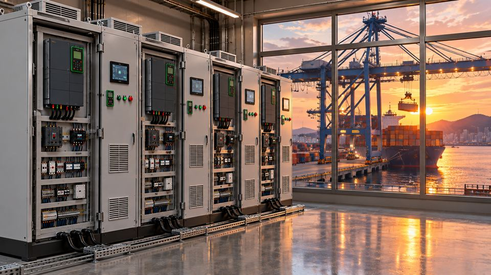

Since 1991, DONG-IN ENSIS has designed and built control panels for industrial and marine sites. On that foundation, we now make Intelligent Control Panels that collect and connect equipment data while controlling it.
Thank you for visiting DONG-IN ENSIS.
We began in 1991 as a supplier of industrial control equipment and grew into a company that designs and builds control systems for ships, energy facilities and plants. Over more than 750 projects, one thing became clear: most equipment is already controlled by PLCs and drives, but the data they generate never leaves the control panel.
AI and smart factories need field data first. Our Intelligent Control Panel collects data where the equipment is controlled and delivers it to the cloud in a standard format. For manufacturers, it is the first step toward managing equipment with data. For IT companies, it is a reliable source of field data.
We will keep adding data and intelligence to the control technology we have built in the field for 35 years.
Founded as Dongin Gijeon. Supplying global brands such as Siemens, Fuji Electric, ABB and Danfoss
Industrial and marine control systems: design, build, software and commissioning
Eco-Technology Research Center founded; national R&D projects and liquid hydrogen station control
Panel-based industrial data infrastructure connecting field equipment to cloud and AI
Data infrastructure is not built with software alone. It starts with hands-on experience controlling real equipment.
From panel design to build, wiring, PLC programming, factory testing and on-site commissioning.
We have built and verified control systems in hydrogen, shipbuilding and plant sites with strict safety requirements.
Our Eco-Technology Research Center leads national and regional R&D and industry-academia collaboration.

Accelerating DX and AX in manufacturing and maritime industries with field equipment data.
Creating and connecting reliable data from the control panels that run the equipment.
TEL +82-51-862-3668 · FAX +82-51-862-3325 · E-mail dongin@donginmne.com